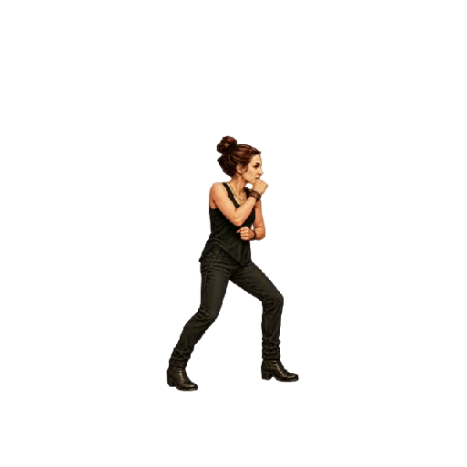
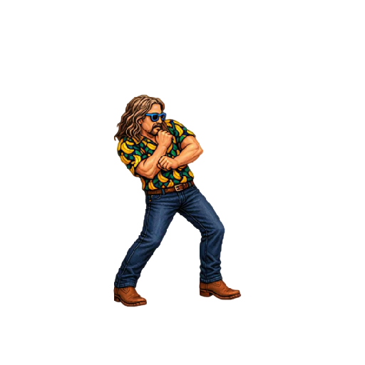
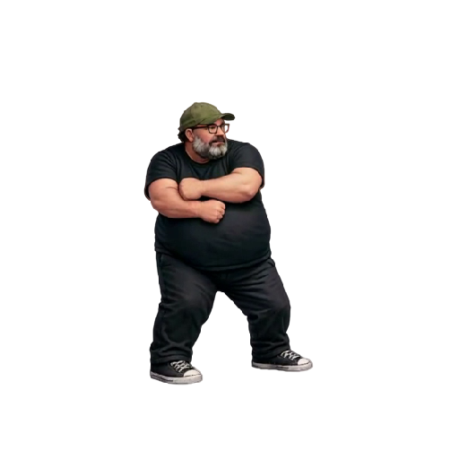
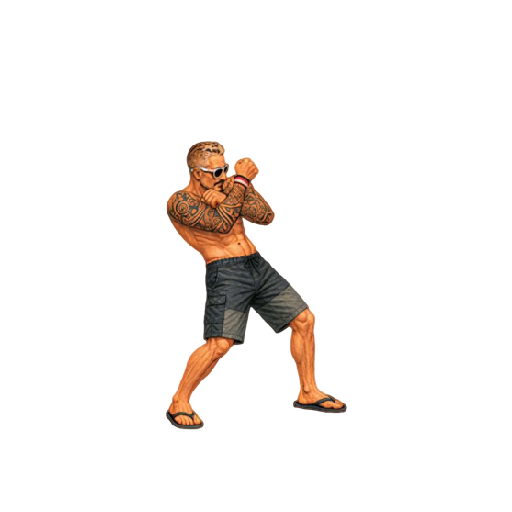
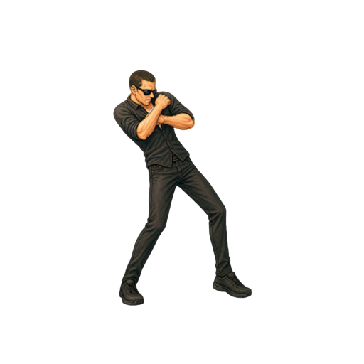
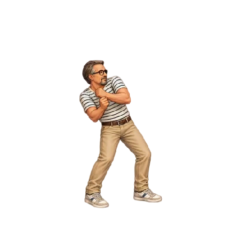
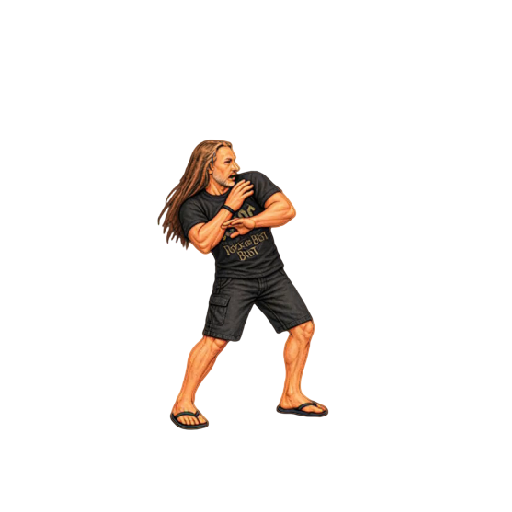

Timing Parata media
Tutti i sette personaggi eseguono la sequenza in 500 ms (0,5 s) a velocità 1×. FPS = numero di frame × 2; ogni frame mantiene la propria posizione nello spritesheet e dura 500 / numero di frame millisecondi.
La durata comprende anche l’ultimo frame. Senza Loop resta visibile la posa iniziale dopo il ritorno; con Loop il ciclo dura 500 ms. L’inizio della posa di parata dipende dal numero di frame ed è riportato a parte: non è un impatto sincronizzato a 100 ms. Tutte le parate eseguono andata e ritorno inverso, senza duplicare il frame di picco.
“Riproduci tutte” riallinea i player anche nei cicli successivi e con caricamento progressivo. A 0,5× la sequenza dura 1000 ms; a 2× dura 250 ms. PNG, tagli, altezze in centimetri, scale e ancoraggi restano invariati; i timing Godot sono conservati come provenienza nel manifest.
Scarica CSV · Configurazione timing
| Personaggio | Posa di parata | Frame | Durata | FPS demo | FPS Godot | Posa di parata da | Note |
|---|---|---|---|---|---|---|---|
| Arianna |  | 25 | 500 ms | 50 | 48 | 240.00 ms | Andata 1-13, poi ritorno inverso fino a 1, senza duplicare il picco. |
| Bue |  | 11 | 500 ms | 22 | 24 | 227.27 ms | Andata 1-6, poi ritorno inverso fino a 1, senza duplicare il picco. |
| Mangler |  | 15 | 500 ms | 30 | 24 | 233.33 ms | Andata 1-8, poi ritorno inverso fino a 1, senza duplicare il picco. Scala Godot 0.85; correzione e altezza 183 cm conservate. |
| Mileto |  | 11 | 500 ms | 22 | 24 | 227.27 ms | Andata 1-6, poi ritorno inverso fino a 1, senza duplicare il picco. |
| Oscare |  | 11 | 500 ms | 22 | 24 | 227.27 ms | Andata 1-6, poi ritorno inverso fino a 1, senza duplicare il picco. |
| Peirò |  | 11 | 500 ms | 22 | 24 | 227.27 ms | Andata 1-6, poi ritorno inverso fino a 1, senza duplicare il picco. |
| Torpe |  | 11 | 500 ms | 22 | 24 | 227.27 ms | Andata 1-6, poi ritorno inverso fino a 1, senza duplicare il picco. |